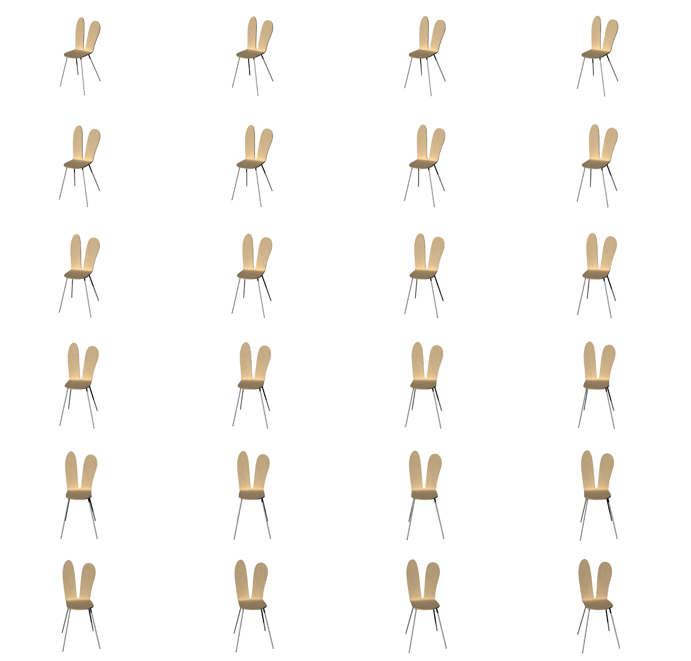

Web:
SANAA Armless Chair
Role
UI Designer
Responsibilities
• UI systems
• UI design
Overview
When designing user interface for furniture designed by famous Japanese Architects; SANAA' the Rabbit Chair, it is important to consider the potential interest of people in the spatial design field who may be drawn to the chair's unique design. With this in mind, the UI should aim to provide an intuitive and engaging experience that allows users to explore the chair's 3D form and understand it's spatial qualities. To achieve this the UI could leverage frame technology similar to that used by Apple, which enables for a choreographed presentation of the 3D model.
Mobile UI Systems

Desktop UI Systems

Product presentation

Each frame is refreshed as the user scrolls through the page. As the frames travel, the chair is rotated by 2 degrees, and zoomed by 1% of the image. Creating a seamless image of the chair rotating and the camera zooming into the object. Compiled, the images aren presented to be in motion as below.


Reflection Statement
The development of a home assistance application for a unique house with it's own design integrity was a challenging project. As a UI/UX designer for this application, it was important to consider the specific needs and the physical boundaries of this type of living.
The application's ability to integrate with multiple systems and provide remote control, while also complementing the design principles of the way of living in the house has been a key factor in its success.
Key Takeaways
• Creating side-by-side comparisons to create two different stream of thinking to create a project;
• Understanding the user's needs and the site specifically where the application will be installed to;
• Creating set parameters before and identify requirements and to document in my own style;
• Ensure the design is accessible to provide an inclusive user experience;
• Validate design decisions through iterations.